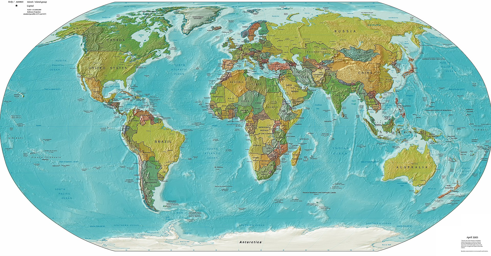

Im Folgenden können Sie seltene Erden auswählen, welche am häufigsten im Smartphone vorkommen.
Auf der interaktiven Weltkarte werden Ihnen die Ländern mit dem größten Vorkommen dieser seltenen
Erden angezeigt, sowie bis wann die Ressource vollstöndig abgebaut sein wird.
Testbild:
